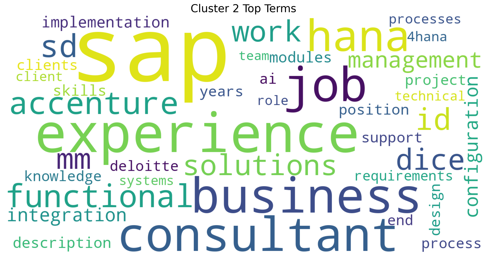
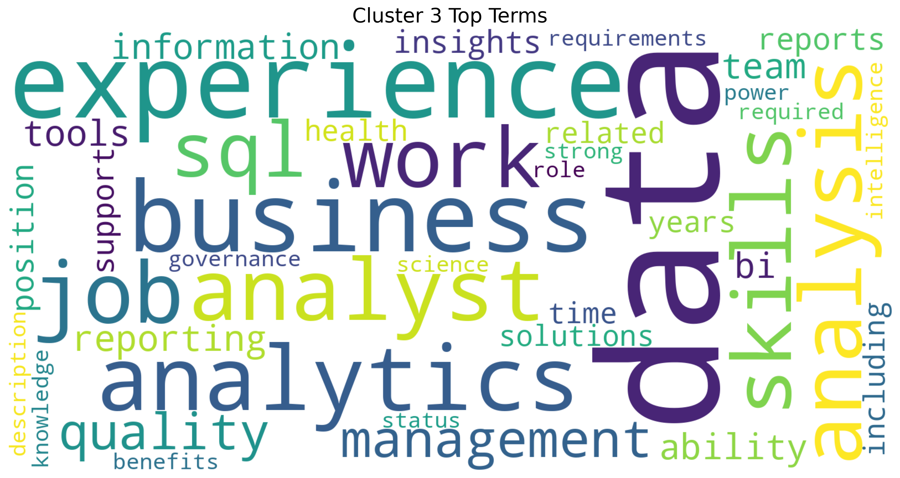
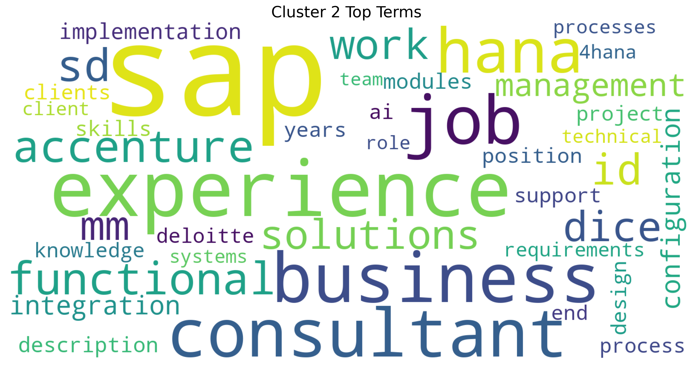
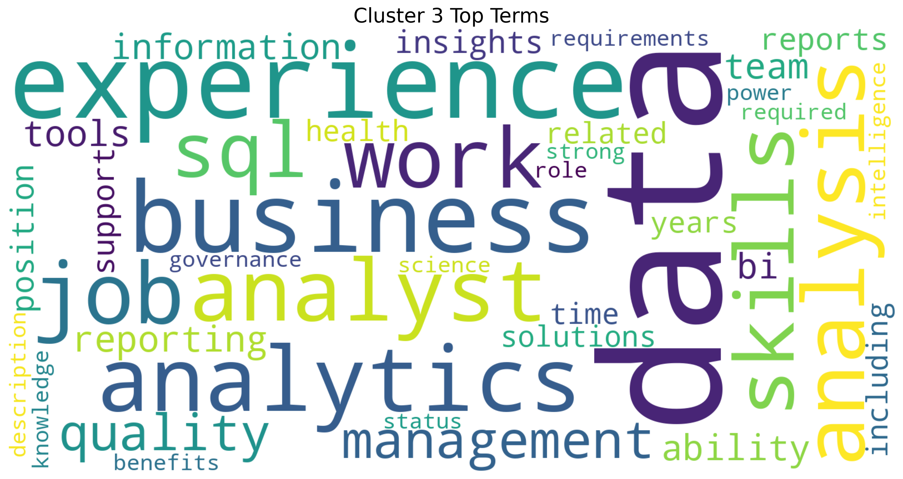
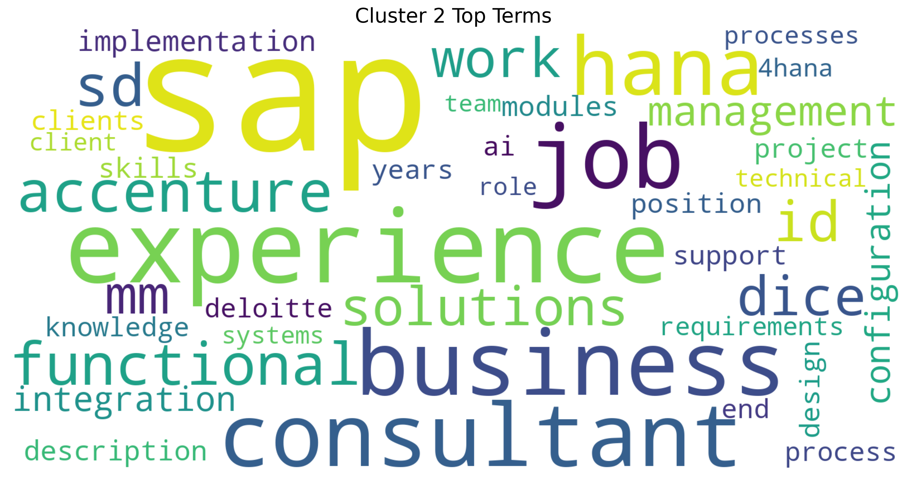
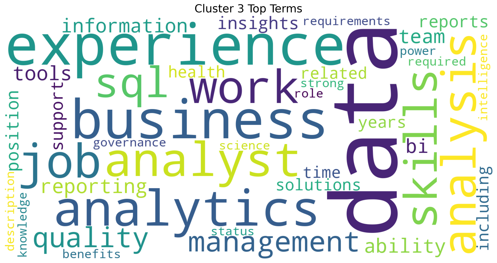

import pandas as pdimport plotly.express as pximport plotly.io as piopio.renderers.default ="vscode"from pyspark.sql import SparkSessionfrom pyspark.sql.functions import split, explode, col, regexp_replace, transform, isnanspark = SparkSession.builder.appName("LightcastCleanedData").getOrCreate()# Reload processed datadf_cleaned = spark.read.option("header", "true").option("inferSchema", "true").option("multiLine","true").csv("data/lightcast_cleaned.csv")# View data structures and samplesdf_cleaned.show(5)
1 Extracting Key Terms from Job Descriptions Using TF-IDF
We start by extracting the job description text from the “BODY” column and convert it into a Pandas DataFrame for easier text processing. To clean it up a bit, we remove line breaks so that the text becomes more uniform and easier to analyze. Then, we apply TF-IDF (Term Frequency-Inverse Document Frequency), which helps us identify and quantify the most important words across all descriptions, ignoring common English stop words. This transformation converts the text into a numerical format, capturing how relevant each word is in a particular document compared to the whole collection.
Code
from sklearn.feature_extraction.text import TfidfVectorizer# Convert to Pandas DataFrame, taking only BODY columnsbody_df = df_cleaned.select("BODY").dropna().toPandas()# Clear textbody_df["BODY"] = body_df["BODY"].str.replace(r'\n|\r', ' ', regex=True)# TF-IDF extracttfidf_vectorizer = TfidfVectorizer(max_features=1000, stop_words='english')X_tfidf = tfidf_vectorizer.fit_transform(body_df["BODY"])
2 Visualizing Job Clusters with Word Clouds
We applied KMeans clustering to the TF-IDF features of job descriptions to group similar postings into four distinct clusters. Each job was assigned a cluster label, which we then used to explore the top terms that defined each group. By extracting the most influential keywords from each cluster’s TF-IDF centroid, we generated word clouds to visualize the dominant language and themes within each cluster. These word clouds help us quickly grasp the unique focus of different groups, whether it’s technical, managerial, or creative roles, based on the language used in job descriptions.
2.1 Clustering TF-IDF features with K-Means
Code
from sklearn.cluster import KMeansk =4kmeans = KMeans(n_clusters=k, random_state=42)clusters = kmeans.fit_predict(X_tfidf)# Add the clustering results to the original DataFramebody_df["cluster"] = clusters
2.2 Generate word clouds for each cluster
Code
from wordcloud import WordCloudimport matplotlib.pyplot as pltimport numpy as npimport os# Get a glossaryterms = tfidf_vectorizer.get_feature_names_out()# Get the top keywords for each clustering centerorder_centroids = kmeans.cluster_centers_.argsort()[:, ::-1]# Create directoryoutput_dir ="images/wordcloud"os.makedirs(output_dir, exist_ok=True)for i inrange(k):print(f"Generate a word cloud of class {i}...") top_terms = [terms[ind] for ind in order_centroids[i, :40]] weights = {term: kmeans.cluster_centers_[i][terms.tolist().index(term)] for term in top_terms} wordcloud = WordCloud( background_color='white', width=1600, height=800, max_font_size=300, prefer_horizontal=0.9 ).generate_from_frequencies(weights) plt.figure(figsize=(16, 8)) plt.imshow(wordcloud, interpolation='bilinear') plt.axis("off") plt.title(f"Cluster {i} Top Terms", fontsize=20)# Save the image to the specified directory output_path = os.path.join(output_dir, f"cluster_{i}_wordcloud.png") plt.savefig(output_path, dpi=300, bbox_inches='tight') plt.show()
 
3 Distribution of the number of jobs in each category
Code
import plotly.express as pxfig = px.histogram(body_df, x="cluster", nbins=k, title="Distribution of jobs by theme (cluster)")fig.write_html("./images/jobs_by_theme.html")fig.show()
4 Training a SVM & Naive Bayes models using TF-IDF features
We trained two different classifiers, Naive Bayes and Support Vector Machine(SVM), to predict job clusters based on TF-IDF features extracted from job descriptions. By splitting the data into training and testing sets, we evaluated the models’ accuracy in classifying unseen samples. The classification reports provided detailed performance metrics, while a confusion matrix visualized how well the SVM model distinguished between the four clusters. This approach helps us assess the feasibility of using machine learning to automatically categorize job posts based on their content.
4.1 Training two classifiers
Code
from sklearn.model_selection import train_test_splitfrom sklearn.naive_bayes import MultinomialNBfrom sklearn.svm import LinearSVCfrom sklearn.metrics import classification_report, confusion_matriximport seaborn as sns# Using clusters as classification targetsy = body_df["cluster"]# Splitting the training and test setsX_train, X_test, y_train, y_test = train_test_split(X_tfidf, y, test_size=0.2, random_state=42)# Training the Naive Bayes Classifiernb_model = MultinomialNB()nb_model.fit(X_train, y_train)y_pred_nb = nb_model.predict(X_test)# Training SVM Classifierssvm_model = LinearSVC()svm_model.fit(X_train, y_train)y_pred_svm = svm_model.predict(X_test)# Evaluate Naive Bayesprint("\nüîç Naive Bayes :")print(classification_report(y_test, y_pred_nb))# Evaluate SVMprint("\nüîç SVM :")print(classification_report(y_test, y_pred_svm))# Confusion Matrix of SVMcm = confusion_matrix(y_test, y_pred_svm)plt.figure(figsize=(6, 5))sns.heatmap(cm, annot=True, fmt='d', cmap='Blues', xticklabels=range(k), yticklabels=range(k))plt.xlabel("Predicted")plt.ylabel("True")plt.title("SVM confusion matrix")plt.savefig("images/SVM_confusion_matrix.png", dpi=300, bbox_inches='tight') plt.show()
5 Keyword heat visualization (according to the term frequency)
Code
import numpy as npimport pandas as pdimport plotly.express as px# Extract the vocabulary and matrix of the TF-IDFterms = tfidf_vectorizer.get_feature_names_out()tfidf_matrix = X_tfidf.toarray()# Sort by word frequencyterm_frequencies = tfidf_matrix.sum(axis=0)freq_df = pd.DataFrame({'term': terms, 'frequency': term_frequencies})freq_df = freq_df.sort_values(by='frequency', ascending=False).head(30)# Visualize word frequencyfig = px.bar(freq_df, x='term', y='frequency', title="üìà Top 30 high-frequency words (by word frequency)", text_auto='.2s')fig.update_layout(xaxis_tickangle=-45)fig.write_html("./images/Top30_high_frequency.html")fig.show()
  
 